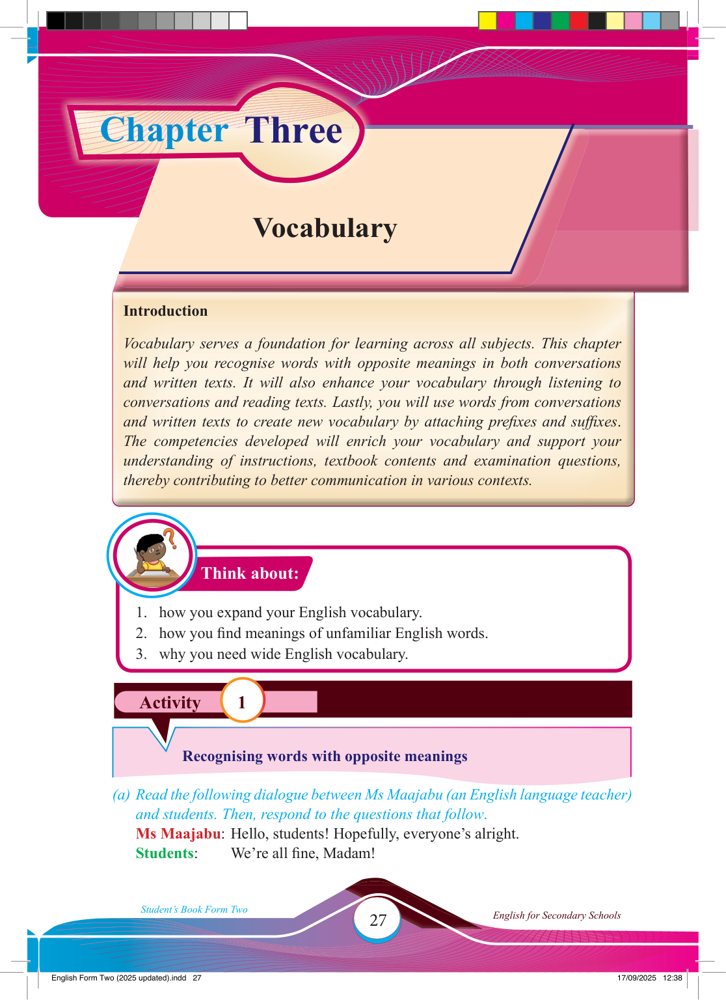

Chapter Three
Activity 1
Think about:
Vocabulary
Introduction
Vocabulary serves a foundation for learning across all subjects. This chapter will help you recognise words with opposite meanings in both conversations and written texts. It will also enhance your vocabulary through listening to conversations and reading texts. Lastly, you will use words from conversations and written texts to create new vocabulary by attaching prefi xes and suffi xes.
The competencies developed will enrich your vocabulary and support your understanding of instructions, textbook contents and examination questions, thereby contributing to better communication in various contexts.
1. how you expand your English vocabulary.
2. how you fi nd meanings of unfamiliar English words.
3. why you need wide English vocabulary.
Recognising words with opposite meanings
(a) Read the following dialogue between Ms Maajabu (an English language teacher) and students. Then, respond to the questions that follow.
Ms Maajabu: Hello, students! Hopefully, everyone’s alright.
Students:
We’re all fi ne, Madam!
17/09/2025 12:38